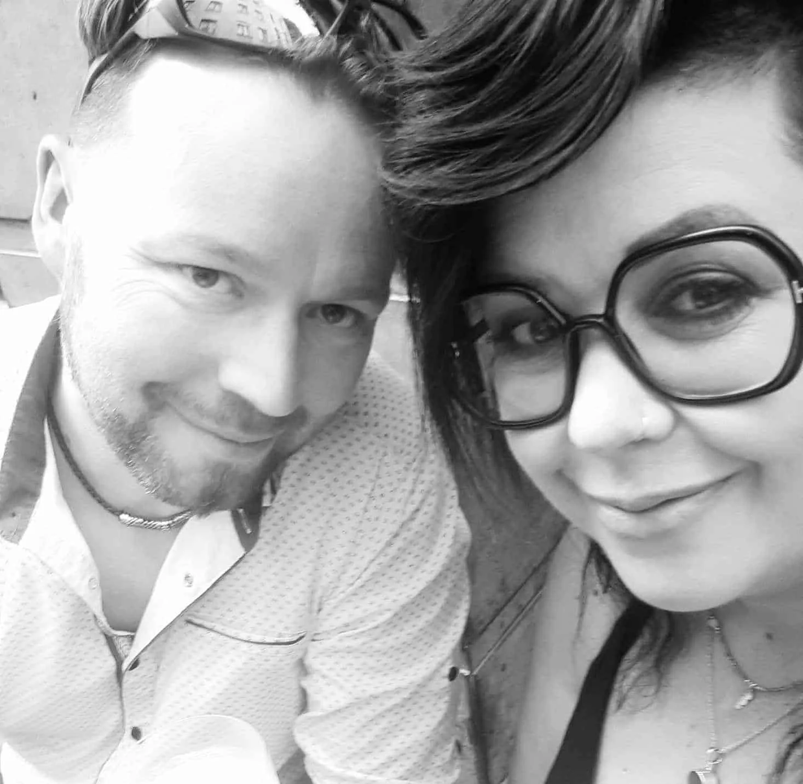

Véronique Vanhixe
Véronique begeleidt mensen onder meer rond rouw en verlies, relaties, seksualiteit, zingeving en familieopstellingen. Ze werkt warm, betrokken en integratief.
Onze plek en onze visie
Een warme plek waar ruimte is voor kwetsbaarheid én kracht, voor zoeken én groeien, voor stilte én verbinding.
Waarom Sensie bestaat
Bij Sensie komen therapie, coaching, ontmoeting en persoonlijke ontwikkeling samen. Zingeving loopt als een rode draad door wat we doen: wat geeft jouw leven richting, energie en voldoening?
We geloven dat zorg verschillende vormen kan aannemen. Soms helpt een gesprek. Soms een andere blik. Soms het samenbrengen van mensen. We lopen graag een stukje met je mee om stil te staan bij wat er is en opnieuw ruimte te maken voor wat betekenisvol voelt.
De mensen achter Sensie

Véronique begeleidt mensen onder meer rond rouw en verlies, relaties, seksualiteit, zingeving en familieopstellingen. Ze werkt warm, betrokken en integratief.
Pieter brengt mensen samen in deelcirkels en begeleidt vanuit aandacht voor verbinding, authenticiteit en het unieke verhaal van ieder mens.
Onze werkwijze
We stemmen onze begeleiding af op de persoon voor ons. Door regelmatig deel te nemen aan intervisie en supervisie blijven we leren en zorg dragen voor de kwaliteit van ons werk. Daarbij staat jouw privacy voorop.
Zo bereik je onsWelkom bij Sensie
Je hoeft je vraag nog niet precies te kunnen verwoorden. Samen kijken we wat er speelt en wat je nodig hebt.